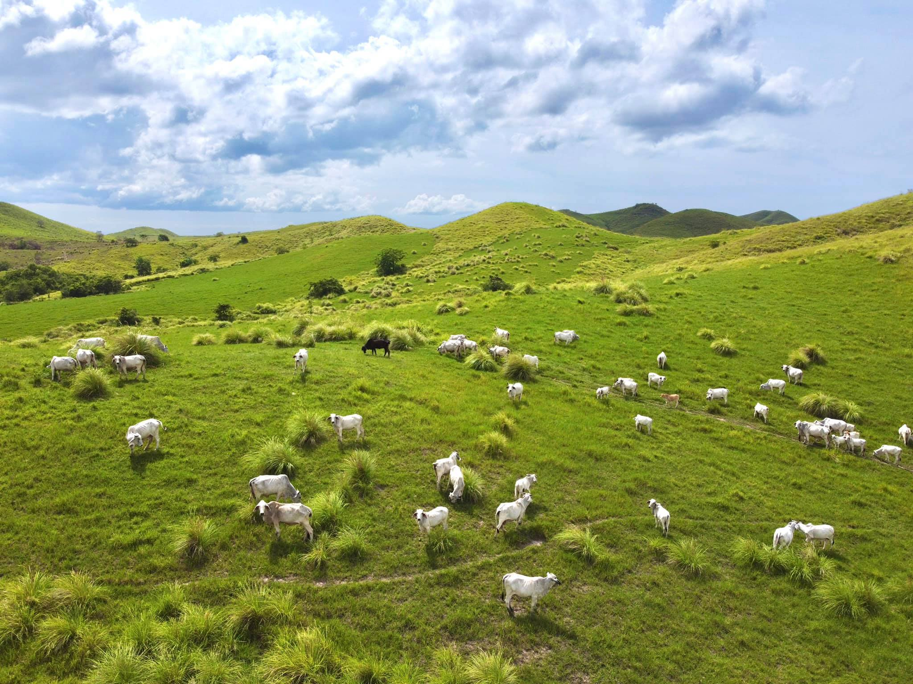

.jpg)
At the PCC-USF in Ubay, Tourists can experience manual milking of the Carabao (Water Buffalo) and learn the long process before doing it. Then be rewarded with a drink of cold fresh milk in plain, chocolate or mango flavor.
Meet the cows of Ubay Stock Farm. Learn which one is best for milking & for providing meat.
The native chicken at USF. There are many kinds & bring home with the knowledge of how to raise them in good health condition & keep them in place.
Horse Back Riding is one of the activities you can do at Ubay Stock Farm. A good horse rider can take a ride viewing the mountains & the hills while the beginners can only ride at a closer distance.
| Address | Brgy. Lumangog, Ubay, Bohol |
| How to Get There | By Bus, Van, Van -Tagbilaran city – Ubay Non- Bus Aircon – Tagbilaran City – Ubay PUJ – from Ubay to the site Bus Aircon – from Ubay to the site |
| Schedule | Weekdays (Monday to Friday) : 8:00 AM – 5:00 PM Weekends (Saturday & Sunday) : 8:00 AM-5:00 PM (Note: Pre-arranged visit) Every day from 7:00 AM to 5:00 PM |
| What is included? | Local Guide, Orientation and Fresh Milk |
| What to wear? | Rubber shoes or sandals, shorts |
| What to bring? | Extra shirts, sun protection, drinking water |
| Does the eco-tour accept bookings? | Yes, we accept bookings. You can contact Merlou Reyes and Mae Ann Acedo. |
| Contact Person | Merlou Reyes ; Mae Ann Acedo |
| Contact Number | 09197429363 ; 09173113974 |
| nerloureyes@gmail.com maeannacedo@gmail.com |